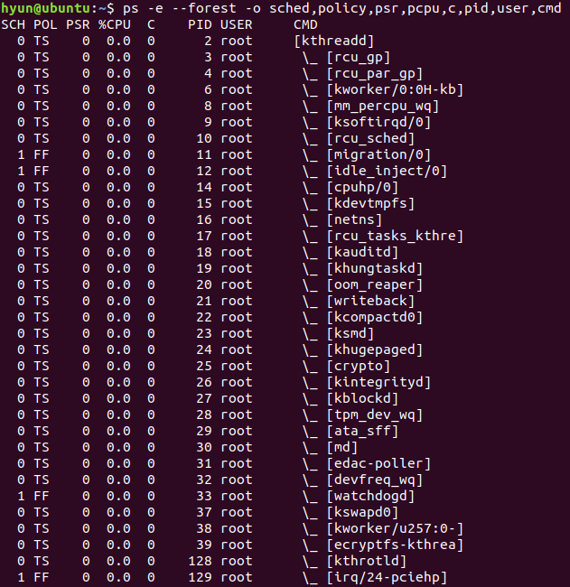
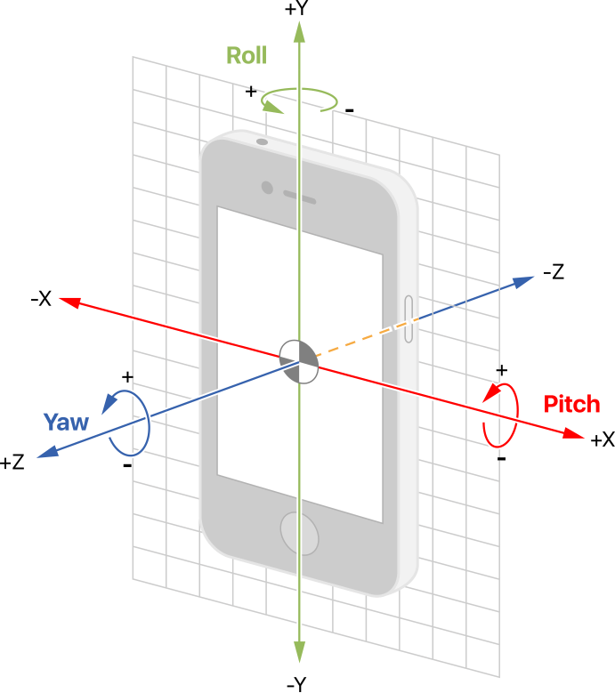

Weight R.R Scheduler
Language: C
Date: November/2019
Date: November/2019
- A Linux kernel scheduler that supports a weight round-robin scheduling policy as the default scheduling policy for init and all of its descendants
- Multicore system is fully supported
- Assigns the task to the CPU with the least total weight
- Capable of working on both uniprocessor systems and multicore/multiprocessor systems
- Fully supports load balancing; that is, a CPU steals a task from another CPU when it doesn't have any tasks to run

Android Synchronizer
Language: C
Date: October/2019
Date: October/2019
- A new kernel synchronization mechanism that allows multiple processes to block on a rotation event until the android emulator exceeds a certain rotational speed
- The device rotation state is accessed via an on-board gyroscope that reflects the rotational speed around X,Y and Z axis of the device
- When the emulator rotation is updated, all processes that are blocked on a rotation event are unblocked if that event is triggered
- To be resistant to noise, the kernel records N rotational samples; only when n out of N samples exceed the threshold, the event is triggered
TCP Server
Language: C
Date: November/2018
Date: November/2018
- A web server that implements a subset of HTTP 1.0, and that handles GET requests for static content
- It maintains a persistent TCP connection to a lookup server
- Providing an HTML front-end to the lookup server, the server returns dynamic content, specifically lookup records formatted in an HTML table

My Simple Bash Shell
Language: C
Date: September/2019
Date: September/2019
- Modeled after Bash Shell, it runs continuously, and displays a prompt when waiting for input
- After parsing and lexing the command, it executes it
- It remembers the last 100 commands the user ran successfully, and auto-suggests commands for an invalid command
- Augmented to be capable of executing a sequence of multiple programs, allowing for communication between programs through a pipe